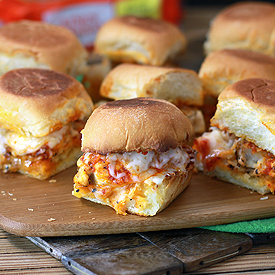

Chicken Parmesan Sliders

Chicken Parmesan Sliders are sweet dinner rolls toasted with garlic butter and topped with Parmesan cheese. Slices of pan-fried chicken, marinara sauce and piles of mozzarella cheese top this picture perfect slider
Ingredients
- 2 tablespoons extra virgin olive oil
- 3 chicken breasts (1 ½ pounds total), cut into twelve 1/2-inch steaks
- 1/2 teaspoon kosher salt
- 2 teaspoons fresh cracked black pepper
- 3 tablespoons unsalted butter
- 1 teaspoon garlic powder
- 3 ounces grated fresh parmesan cheese
- 3/4 cup marinara sauce
- 4 ounces shredded mozzarella cheese
- 1 package Kings Hawaiian Savory Butter Dinner Rolls
Directions
- Preheat oven to 400°F. Place rolls on a cutting board, using a serrated knife cut rolls in half lengthwise (without breaking rolls apart). Open rolls and place tops on one side of a baking sheet and bottoms on the other side cut-side up.
- Melt butter in a small microwave-safe bowl, stir in garlic powder. Brush butter on cut side of bread. Bake bread for 8-10 minutes until bread is lightly golden brown.
- Prepare chicken by slicing the thickest part of the breast about ½” thick. Cut the thinner part of the breast into pieces slightly larger than the individual rolls.
- Meanwhile, warm a large skillet over medium-high heat. Drizzle with olive oil. Sprinkle chicken with 1/2 of salt and 1/2 of pepper. Cook until browned, flip and cook until cooked through, about 8 minutes total.
- Remove bread from oven. Carefully remove top halves of rolls and place on a plate. Set aside. Sprinkle Parmesan cheese over the bottom halves. Top with cooked chicken pieces. Drizzle each chicken piece with about 1 tablespoon of marinara sauce and top with mozzarella cheese. Bake 5 minutes or until cheese is bubbly and melted.
- Place top halves back on chicken. Cut into sliders, serve and enjoy!